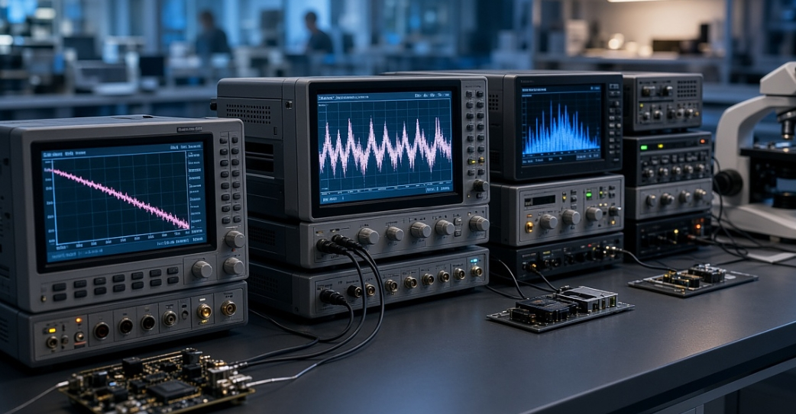

FlickerN
Welcome to FlickerN — a resource dedicated to the development of software and measurement equipment for 1/f and flicker noise analysis.

The website is under development.
Updated: Aug 16, 2026
Welcome to FlickerN — a resource dedicated to the development of software and measurement equipment for 1/f and flicker noise analysis.

The website is under development.
Updated: Aug 16, 2026